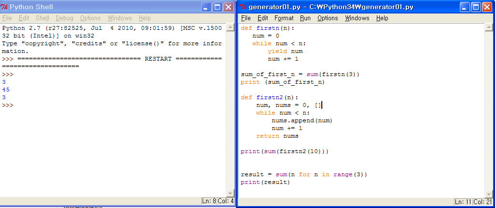
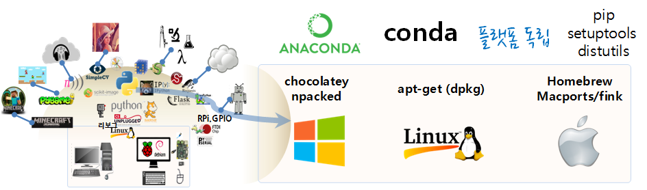

R 파이썬 소프트레이어 클라우드, xwMOOC
파이썬 프로그램 개발환경
학습 목표
- 파이썬 개발환경
1. 파이썬 2와 3 비교
라즈베리 파이에 대표적인 운영체제 라즈비언을 설치하면 파이썬 2와 파이썬 3이 설치되어 있다. 파이썬 2는 2000년에, 파이썬 3는 2008년에 출시되었다. 파이썬 2도 여전히 개발이 진행되고 있지만 점점 활발함을 읽어가고 있으며, 많은 사람들은 이제 파이썬 3로 이동하고 있고, 점점더 활발하게 진행되고 있다. 하지만, 일부 소프트웨어는 여전히 파이썬 2에 기반하고 있어 유의할 필요가 있다.
| 차이점 | 예약어 | 파이썬 2 | 파이썬 3 |
|---|---|---|---|
| 출력함수 | print “안녕하세요!” | print(“안녕하세요”) 혹은 print(“제 나이는”, my_age) | |
| 입력값 받는 함수 | raw_input, input | raw_input | input |
| 정수 나눗셈 | / | 2/2=1, 3/2=1, 1.0/2=0.5 | 1/2=1.5 1//2=0 |
파이썬 2와 파이썬 3의 좀더 자세한 차이점은 국문, 영문를 참조한다.
참고 : More on Python
2. 파이썬 프로그램 개발환경
파이썬 프로그램을 개발하는 방식은 크게 3가지가 있다.
- 명령라인 인터페이스(CLI, IDLE)
- 터미널을 열고, 파이썬 2.x 실행은 콘솔에서
python, 3.x는python3를 타이핑한다. - 파이썬 IDLE (Python GUI)를 클릭해서 실행하고,
File→New Window를 연다. 한쪽에는 파이썬 쉘을 띄워놓고, 한쪽에는 파이썬 프로그램을 작성한다. 그리고 F5 키를 눌러 실행한다. 만약 버그가 있다면 프로그램을 수정한다. 이 과정을 정상적으로 프로그램이 동작될 때까지 반복한다. 
- 터미널을 열고, 파이썬 2.x 실행은 콘솔에서
- 아이파이썬 노트북(IPython Notebook)
- IPython은 기본으로 설치 되어 있지 않으니 파이썬 2의 경우
sudo apt-get install ipython, 파이썬 3의 경우sudo apt-get install ipython3명령어를 통해 설치한다. - 쥴리아, julia를 설치해도 좋다.
- IPython 노트북을 설치한다.
- 쥴리아 다운로드 받는다.
- 쥴리아 명령 프롬프트
julia> Pkg.add("IJulia")명령어로 설치한다. - 쥴리아 명령 프롬프트에서 다음 명령어를 입력하고 실행한다. ~ {.input} using IJulia notebook() ~
- IPython은 기본으로 설치 되어 있지 않으니 파이썬 2의 경우
- 파이썬 통합개발환경(IDE, Integrated Development Environment)
참고: Choosing the Best Python IDE
3. 파이썬 팩키지 관리
PyPI - the Python Package Index PyPI는 파이썬 팩키지 저장소로 현재 기준(‘15년 08월’) 64,707개 팩키지가 있다.

특정 분야에 팩키지관리를 별도로 할 수 있도록 buildout과 conda 팩키지관리자가 있다. buildout은 웹, conda는 과학기술 파이썬 개발환경에 특화되어 있다.
3.1. Conda
아나콘다에 포함되어 있고, 바이너리 팩키지를 설치하고 시스템 수준 팩키지 관리자로 파이썬과 상관없이(Python agnostic) 사용가능하다.
conda search package_name
conda install package_name
conda uninstall package_name
conda list
conda create -n py3korea python=33.2. PyPI 저장소와 Pip
PyPI 저장소에서 파이썬 팩키지를 설치하는 프로그램으로 pip를 사용한다. PiP는 표준 파이썬 설치자로 아나콘다에 포함되어 있다. 순수 파이썬에서만 잘 동작한다.
따라서, C 라이브러리에 크게 의존하는 과학기술 파이썬 팩키지 관리에는 그다지 도움이 되지 않는다. h5py를 설치하면 많은 것을 배울 수 있다.
pip search package_name
pip install package_name
pip uninstall package_name3.3. setuptools
setup.py install은 본인이 팩키지 관리자, 컴파일해서 사용하는, 순수 파이썬인 경우 추천한다. PyPI가 저장소에서 팩키지를 불러 설치하는 느낌이라면, setuptools는 컴파일해서 본인이 환경을 설정하는 것으로 보면 된다.
3.4. 파이썬 개발환경 격리 도구
파이썬 개발환경을 격리시키는데는 virtualenv, pyenv를 사용한다.
3.4.1. virtualenv
virtualenv가 기존에 설치된 파이썬 환경에 연결해서 쓴다는 느낌이라면 pyenv는 통째로 파이썬 환경을 설치한다.
$ pip install virtualenv # virtualenv 환경 설치
$ mkdir /home/pi/venv_python_test # 작업 디렉토리 생성
$ cd /home/pi/venv_python_test
$ virtualenv venv_python_test # 파이썬과 pip 포함한 작업 환경 생성
$ source venv_python_test/bin/activate # 작업환경 활성화
$ pip install scipy # 가상환경에 scipy 팩키지 설치
$ deactivate # 종료개발환경을 pip freeze 명령어로 requirements.txt 파일에 담고, 추후 pip install -r requirements.txt 명령어로 복원한다.
$ pip freeze > requirements.txt
$ pip install -r requirements.txt3.4.2. pyenv
pyenv는 유닉스 전통에 따라 한가지 목적을 정말 잘 달성하도록 고안되어서 쉽게 파이썬 환경을 전환할 수 있게 한다.
참고: Conda: A Cross Platform Package Manager for any Binary Distribution